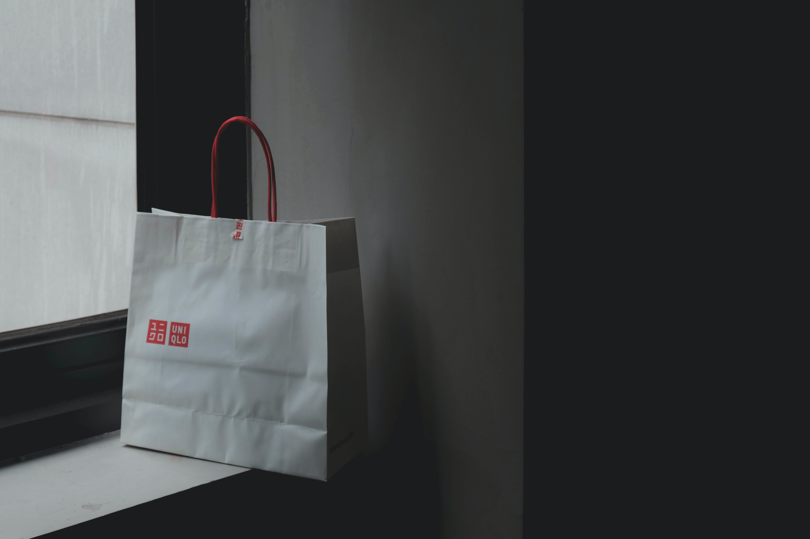
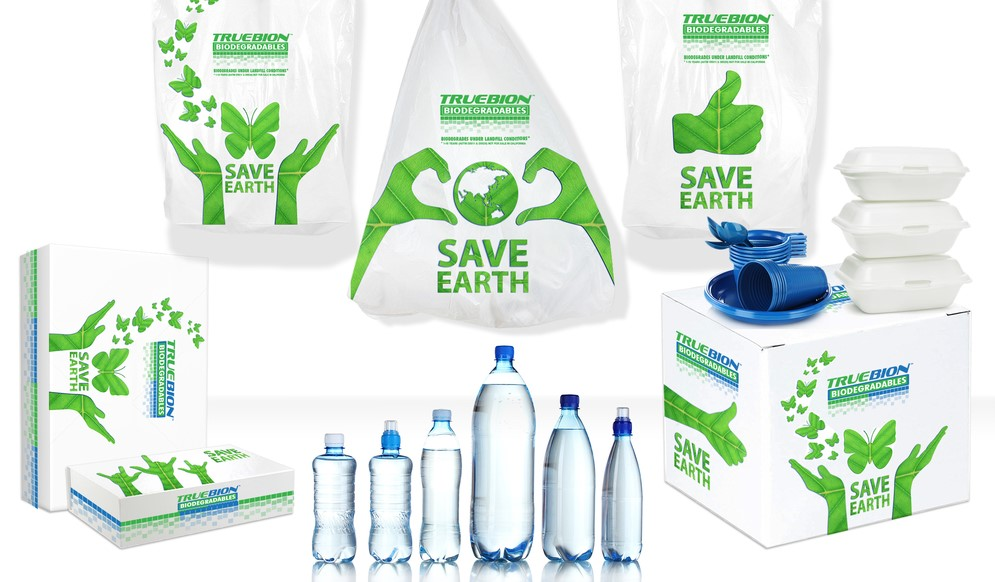

Eco-Friendly Stationery

Stationery items play a crucial role in everyone’s life. These things help us improve our creativity and
learn new skills. In the world full of technology, using stationery products is still impressive. They
are some of our basic needs to make our jobs faster and more convenient.
Most durable office supplies came from natural and recycled materials. These items are much kinder to
our Mother Earth, which is a huge plus. When your clients see your eco-friendly products, they may
choose to do more projects with you.
Reusable bags

Reusable shopping bags are better than plastic or paper bags. These bags are used to prevent
environmental pollution. Materials, used to produce these bags, do not harm the quality of our
surroundings. These bags are generally made of materials such as jute, cloth, and recycled plastics. ,
canvas or organic cotton. These reusable bags are hygienic and easily washable. These products can be
used for various purposes.
Biodegradable plastic

Biodegradable plastics can be applied in a range of useful ways. They can be foamed into packing
materials, extruded, and injection-moulded in modified conventional machines. Different types of fillers
can be used with the system, such as wood flour, lime, clay, or waste paper. The fillers can be coloured
and also used in various granulation sizes to change the material´s external appearance. The material
can be co-injected with other plastic materials such as LDPE, PP, and HDPE. The co-injection process
deposits a thin film of plastic material over the top of the biodegradable plastic. This yields a
completely biodegradable item that is cheaper than conventional plastic materials, completely
waterproof, and coloured to match conventional plastic materials.